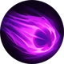
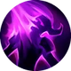
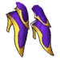
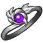
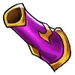
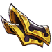
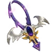
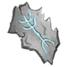
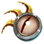
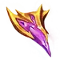

Iseris is the 16th hero that you will unlock at Stage 1800. She is the first hero of class warlock.
Abilities
| Shadow Bolt | |
|---|---|
 |
Strike your target with a shadow bolt dealing 410% of your damage. Cost: 35 Mana. |
{kind=link}
| Drain Life | |
|---|---|
 |
Drain your target's life. Drain health equal to 500% of your damage from your target within 3 seconds. 15 seconds cooldown. Cost: 50 Mana. |
{kind=link}
| Agony | |
|---|---|
| Strike your enemies' minds with agony. All enemies lose health equal to 55% of your damage every second for 5 seconds. 15 seconds cooldown. Cost: 70 Mana. | |
{kind=link}
Gear
| Weapon | Chest | Boots | Ring | |
|---|---|---|---|---|
 |
 | |||
| Wrist | Shoulder | Belt | Relic | |
 |
 |
|||
| Ankh | Rune | Idol | ||
 |
 |
|||
| Talisman | Necklace | Trinket | ||
 |
 |
{kind=link}
{kind=link}
{kind=link}
{kind=link}
{kind=link}
{kind=link}
{kind=link}
{kind=link}
{kind=link}
{kind=link}
{kind=link}
{kind=link}
{kind=link}
{kind=link}
Story
The Keeper of the Souls
{kind=link}
{kind=link}
The keeper of the souls
Every year at the end of the harvest season, the most powerful magicians, warlocks and sorcerers of the realm travel to Stormspire for the fabled "Conjuring of the Ancients". The most prestigious magic gathering in Alandria, the Conjuring is the work of the mysterious Council of Enigma. Since their founding 2 millennia ago, participation is only possible by the personal approval and invitation of Wizard Queen herself.
Once the selection is complete, and the Queen has ordered the start of the Conjuring, the Council's Elemental mages conjure pigeons made of light. On each one's leg, a tiny enchanted papyrus glows with the words "Chosen", to be delivered by flight to the individual attendants. Recipients of the pigeon's message have spoken of the magical creatures dazzling with radiance and vanishing upon completion of their task. Students of the arcane arts quickly learn of this rare honor, and most wait their whole lives, hoping to see the glowing bird waiting at the window.
In the year of the Willow, Wizard Queen Sola had the honor of calling the Conjuring. She had selected the candidates, followed the mystical procedure and watched the pigeons take flight. She took her seat at the Council and waited for the gathering to begin.
Iseris was resting near the river in the Ebony Jungle when she heard the noisy flutter, a polished, glinting sphere by her side. Still thinking she was dreaming as she saw the magic pigeon, and extended her finger in invitation. Once the pigeon landed she chanted "Alar ho, valar ho!"
Her eyes turned purple and her sphere began to shake with magic. Before the pigeon could vanish, the sphere released a beam of energy that struck it. The pigeon's glow turned to black mist, its eyes sunken shadows that seemed darker than black. The creature of light turned into creature of darkness, bending to her will. If it could understand Iseris' tongue, it would have heard her words: "What is yours, is now mine". Iseris, a powerful warlock and leader of the Conclave of Omens, had wanted to send a message of immense power to the Council of Enigma. She channeled her strange magic and the air around the pigeon began to twist and bend. In a flash, it was gone.
Queen Sola she was resting in the Eternal Garden at the centre of the Stormspire when Iseris' sent the bird back. The sight would have terrified a normal woman, as dark energy flowed around the garden, sucking the life out of the enchanted plants. As Queen Sola stood, the pigeon spoke with the voice of Iseris, saying only "I accept" before disappearing in a darkened caricature of its normal radiant display. The Eternal Garden stood untouched; Queen Sola understood that Iseris didn't want to damage anything, only to show off. That was after all, the reason she had selected her.
A wise Wizard Queen knows that although the Conclave of Omens and the Council of Enigma each approach the arcane arts from different perspectives, they only appear as rivals from time to time. Queen Sola wanted change, knowing in her heart that dark times like this could only be survived through unity. Evil could be beaten, and she needed Iseris at the Conjuring.
The time of the Conjuring was approaching, and the journey to the Stormspire was long. Iseris had decided to ride back to the Pyramid of Deception and notify the Conclave of her selection. She was considering how to prepare over the next few weeks when, just a league away from the Pyramid, she saw something that she could never have anticipated.
The Pyramid was aflame. A huge cloud of smoke covered the sun and, kicking her horse into a gallop, prayed that what her suspicions were false. The pyramid was home to the Lunar Relics, artefacts with power beyond the sphere of this world. The Conclave of Omens had a sacred duty to guard them, lest they fall into the wrong hands. The very balance of Alandria would otherwise be in grave danger.
On reaching the main gate, the stench of burning bodies assaulted her senses. The bodies of her companions, frozen in honourable death, filled the path to the ceremonial room. She dismounted and began to run into the inner sanctum, where she saw the high priests' corpses beside the empty altars that housed the artefacts. The pyramid was a graveyard for the bodies and hopes of the Conclave. Iseris, knowing that the necromantic arts would break almost every rule of magic, rolled up her sleeves. She knew that the rules no longer applied. Approaching the remains of the nearest priest, she tapped into her own life force and clawed at his quickly escaping soul. She would drag every last one of them back until she knew how to restore the Conclave's oath.
The priests' body contorted as soul and matter tried to realign. Iseris shook the half-corpse until it could speak. It wasn't long until she had extracted from the tormented ghost of the holy man the truth; that the Undead had planned this attack for years, having anticipated every move and possible defense strategy the Conclave could use. It was nothing short of a miracle that she was absent in exploration and allowed to live.
As the priest was finally allowed to rest, she learned that her that it was not all over. The Conclave may have perished, but a doomsday scenario was always something they had feared since they acquired the Lunar Relics. As the Undead army slaughtered their way to the inner sanctum, an few select members of the Conclave – perhaps a brotherhood more ancient than them - conjured the Draconians. Iseris thought that these might be the ramblings of a tortured half-departed soul, because the Draconians were some sort of magic dragon from childrens' tales. If they were real, however, the summoned dragons could fly the relics and the remaining Conclave to safety.
Searching the library, she confirmed the dead priest was telling the truth. All the books of knowledge and thaumaturgy were missing, and they were useless to the Undead who lacked the life force to use them. The Conclave could be rebuilt.
Surely, Iseris thought, they were headed to Stormspire; when all is done and the sun is set, the Council of Enigma and the Conclave of Omens could not exist without each other. She had calculated the trip for her attendance to the Conjuring, and considering they would take great care to avoid detection. She thought through her plan as she ran back through the devastation to her horse. Her burden was huge but she had to reunite with the escape squad, rebuild the Conclave and seek allies. The Lunar Relics would have to return.
Queen Sola saw the warlock approach, famished from lack of rest and food, at the Stormspire Gate. As she dismounted, the Wizard Queen spoke.
"I saw the battle from my sphere", she said. "Your loss is tragic for all students of the arcane."
As Iseris began to speak, she added: "Our court extends their hand in help, on your apology for disrespect."
Iseris felt a pang of shame, but she would bear anything to keep the balance.
"I apologise, Wizard Queen. On behalf of the Conclave of Omens, I take your hand in help."
The two immediately began to walk together, quickly drawing plans for their patchwork alliance. If the Pyramid had fallen, so could the Stormspire. By the time they had reached the entrance, they had given their hands in agreement. Until the Pyramid of Deception was restored, the Conclave of Omens would live by the Council and use their powers as one.
Iseris stared at the sky, hoping for a glimpse of a dragon carrying her companions. Queen Sola rested an arm on her shoulder, and Iseris spoke.
"First the Firestones and now the Lunar Relics. Undead will destroy the world if we do not do something."
Queen Sola smiled.
"You know, the king has assembled a squad of remarkable individuals that have taken the battle back to the Undead. My daughter, Solaine, fights with them. Join her, Iseris, and wait for your companions in battle. Their arrival is almost certain."
"How can you be so sure?"
Queen Sola's smile widened.
"Where do you think the Council's last hopes would flee, should Stormspire fall? Your High Priests' plans are not so different from our own."
Iseris grinned. The Lunar Relics were lost on her watch as leader, but it was destiny to ally with the Council and take them back. She turned around and locked eyes with Sola.
"Where did you say I can find these remarkable individuals?"
The Test Pilot


{kind=link}
The test pilot
While one can admire the creative minds of Gnomes, one should not take the potential consequences of the application of the said creativity lightly - as Iseris learned recently the hard way. Somewhat surprisingly, she agreed after one too many at the Tipsy Wisp to serve as a test pilot for Fini's and Molly's most recent technomagic creation The Magic Dragon, some kind of a twin rocket system which is supposed to make the owner fly over longer distances. While the first variant wasn't much, since it lacked BOOM, in Fini's own words, and was dubbed "Puff", this current prototype is working "fine" and "is totally safe", in Molly's opinion.
The Dawn of Remembrance


{kind=link}
The dawn of remembrance
During the festival that bridges life and death, Iseris allows herself to mourn. She decorates her form to call forth the spirits of the Conclave, hoping for a glimpse of those she lost. Instead of sorrow, the souls bring warmth, swirling around her in gentle celebration. Emboldened by their presence, she vows once more to reclaim the relics and rebuild what fell. When dawn comes, only petals remain - carrying their light forward into the living world, along with her renewed resolve.